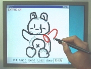

Welcome to our tutorial!
We recommend you take a look at
the video clip (32MB)
before proceeding.
We will introduce seven operations one by one.
Please make both this browser-window and the applet-window visible.
This program is a research prototype, and contains many bugs and flaws.
If you find the program works strangely, press "Undo".
(current implementation supports 2-step undo.)
If the system continues to work strangely, close the applet window,
and go to
the front page
to restart the applet.
First of all, please note the basic controls of the interface:
Let us proceed to step 1.